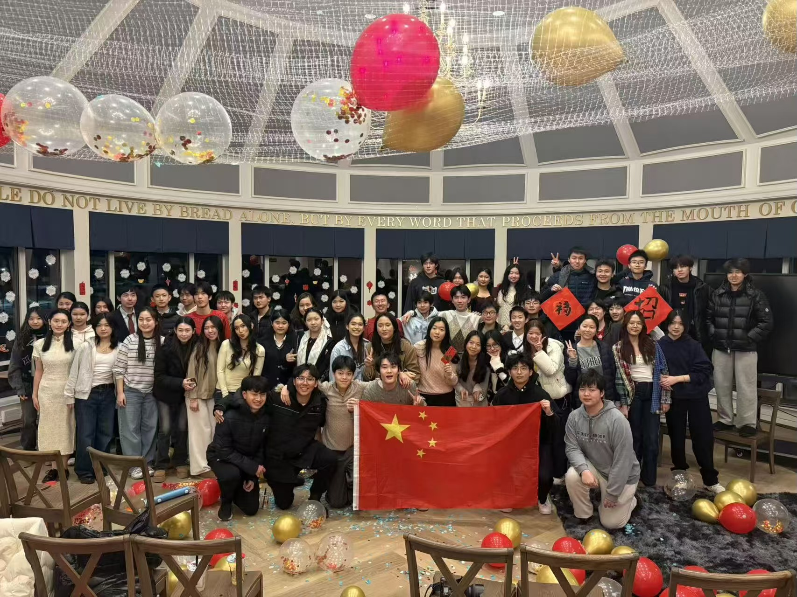
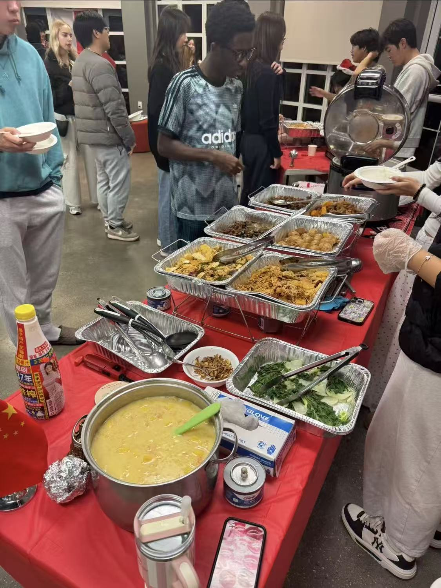
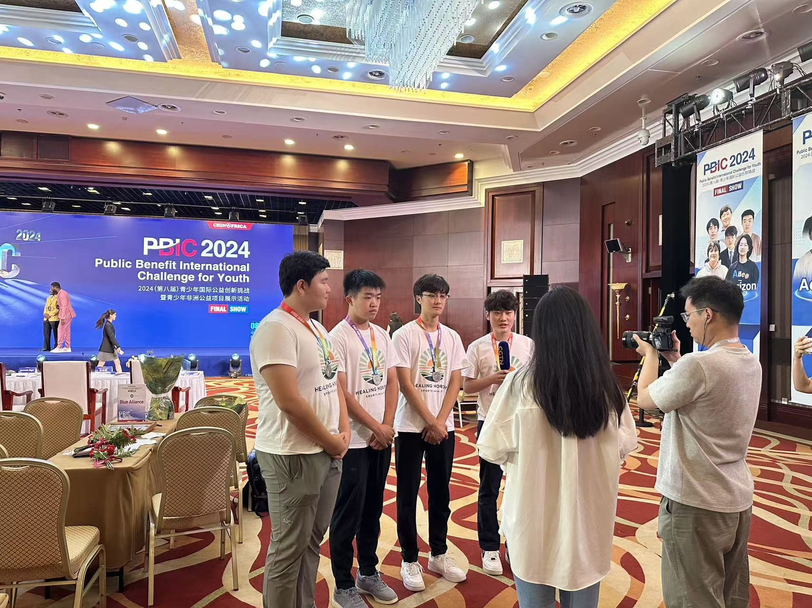
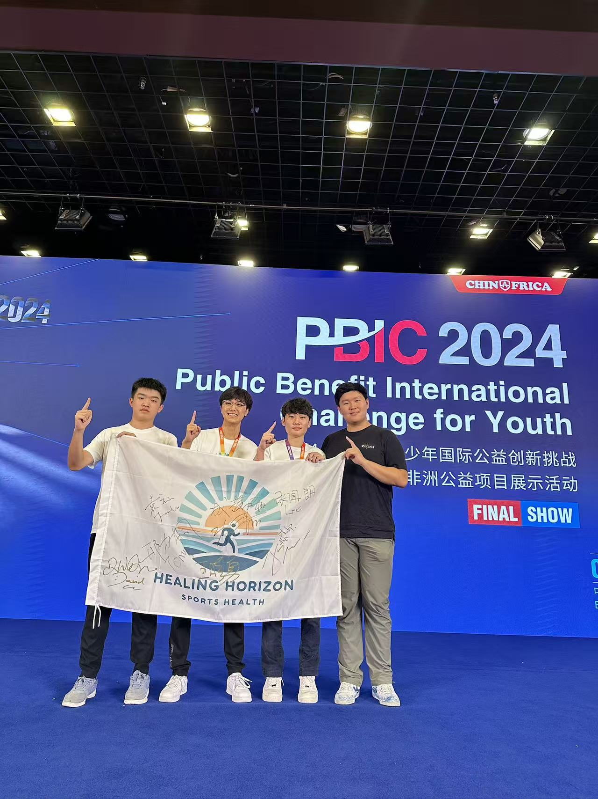
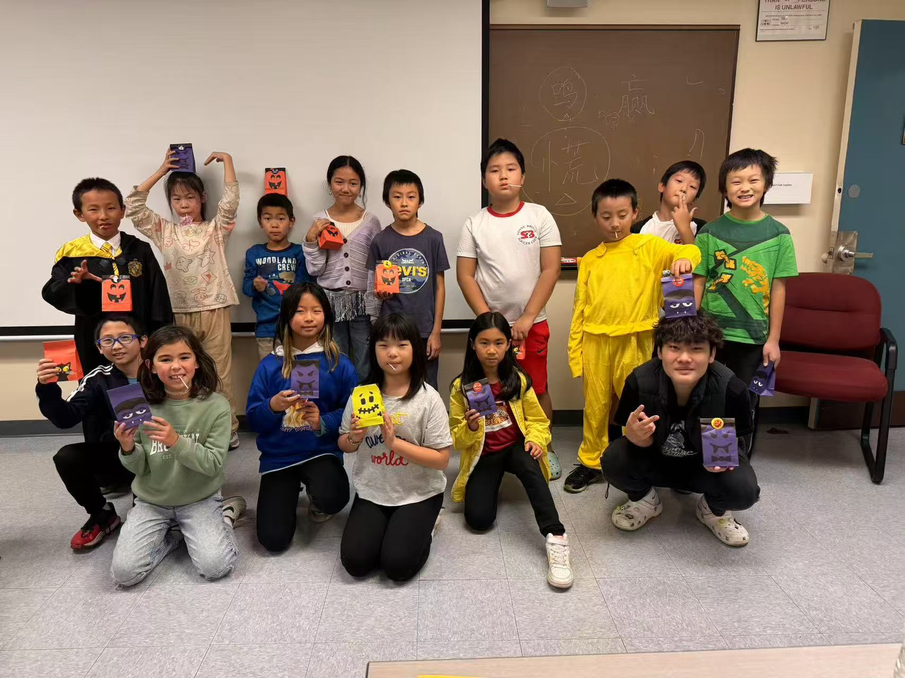
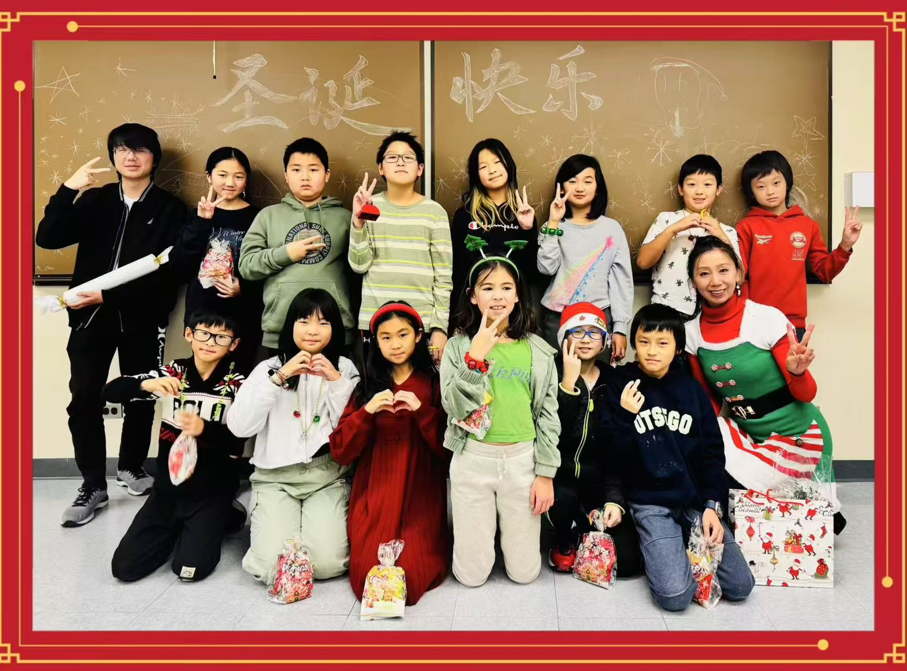
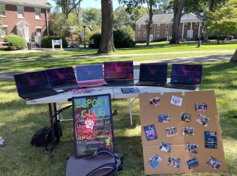
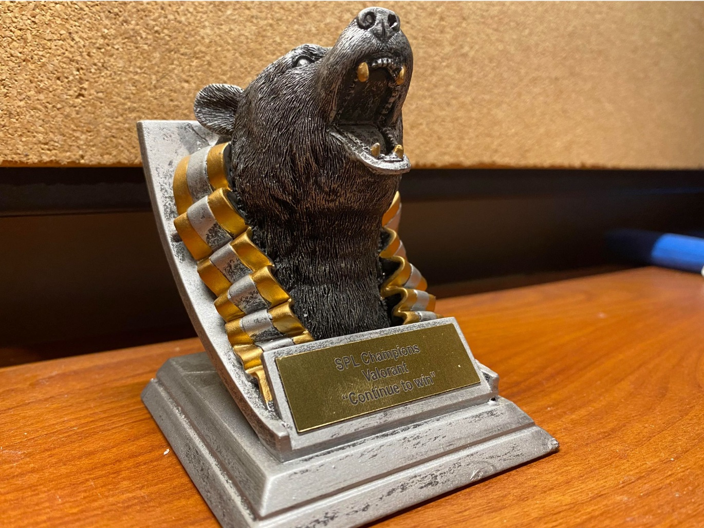
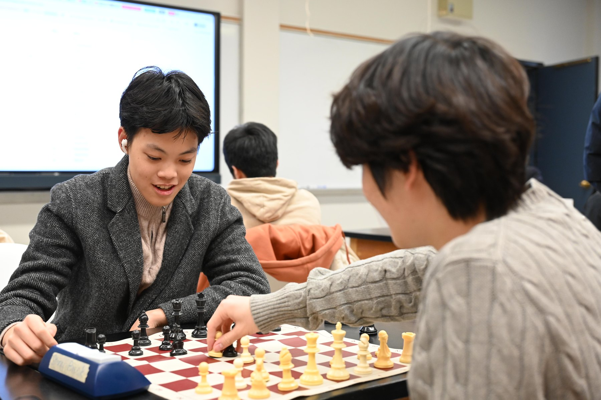

社区与领导力
为他人尽一份力。
我也投入时间建设社区：在校园里、语言课堂上，以及学生发起的服务活动中。
文化与联结
亚洲学生会
主席 · 十二年级
我带领由 10 人组成的执行委员会和 30 多名成员。我们举办了六场文化活动，为亚洲学生会项目筹得超过 2,000 美元。这些聚会通过美食、交流和共同的传统，让社区成员相聚。

我们的社区
相聚在一起。
与中国学生社区的合影，纪念我们在校园中共同建立的联系与分享的传统。

亚洲夜市
一餐美食，一份支持。
在亚洲夜市活动中，我们为整个社区烹饪并售卖食物，为今后的活动筹款。共享一餐既是庆祝文化的方式，也为下一次相聚提供支持。
文化与联结
中国学生支持工作
作为中国学生负责人，我支持 100 多名中国学生，向家长分享学校信息，并协助更新学校的中文版学生手册。
服务与教育
青少年运动损伤预防
共同负责人 · 九至十一年级
共同领导一项筹得约 5,000 美元防护装备资金的计划，与坦桑尼亚阿鲁沙的两家足球俱乐部合作，并与医疗专业人士共同制作运动损伤预防资源。
这些照片拍摄于我们参加的 2024 年青少年国际公益创新挑战赛（PBIC）最终展示活动。

PBIC 2024 / 最终展示
分享我们的工作。
在最终展示活动中接受采访，介绍团队在青少年运动健康和损伤预防方面的工作。

我们的团队
共同的努力。
团队在 PBIC 2024 最终展示现场与 Healing Horizon Sports Health 旗帜合影，纪念我们带到最终展示中的工作。
服务与教育
中文教学项目
我在石溪中文学习中心协助面向约 20 名小学生的中文语言与文化课程，每月授课两次。

课堂活动
课堂中的创造力。
学生们展示万圣节主题手工袋的课堂瞬间。共同参与活动，为相处的时光增添了趣味和动手实践的机会。

节日庆祝
一起庆祝。
与全班一起庆祝节日，现场有节日装饰，黑板上写着中文祝福。这也是分享语言、文化与社区归属感的又一次机会。
学生领导力与团队协作
电子竞技社
副社长
作为副社长，我组织比赛，并协助一个拥有 30 多名成员的社团开展战术、团队协作和技能提升讨论。

认识我们的社团
游戏与交流的空间。
社团展示台通过笔记本电脑、照片和彩色标牌，向学校社区介绍电子竞技社。

竞技比赛
SPL 冠军 · Valorant
社团的 Valorant 奖杯，刻有“SPL Champions”和“Continue to win”。它提醒我们，竞技成绩背后离不开团队协作。
国际象棋与校园服务
我在九、十年级帮助学校国际象棋队赢得萨福克县团体冠军。我也担任招生参观向导，并带领 20 名学生开展每周厨房服务。
